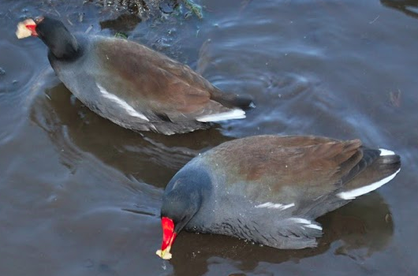

Link to a saved sample.html
The url is https://mahmoodan.github.io/samples/sample.html
Lovely Birds
Text and image example
Use includeMarkdown("path/to/birds.Rmd") to include large chunks of text to keep ui.R more readable.
Image files are placed in subdirecotry www/ and insert an image with img(src = "birds.png").
